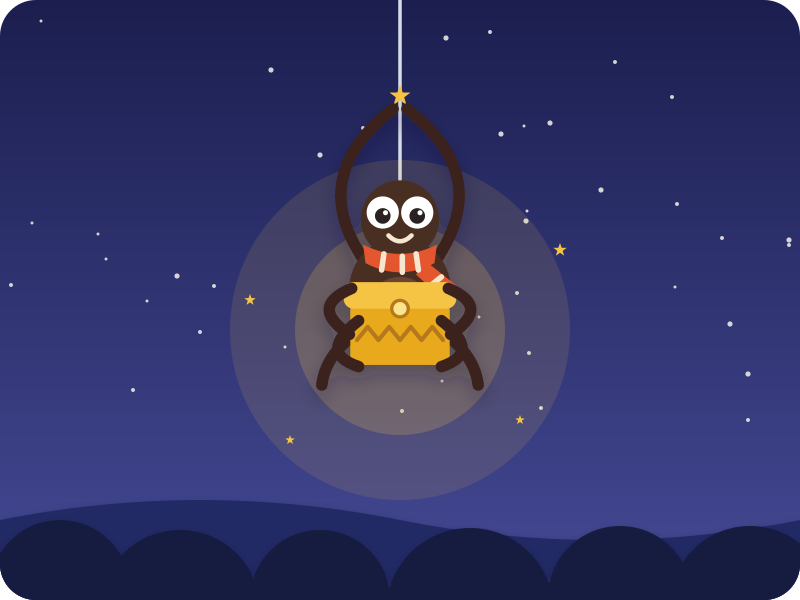
A folk tale from Ghana
Anansi and the Box of Stories
"Story, story — are your ears open?" Kai: "Open!"
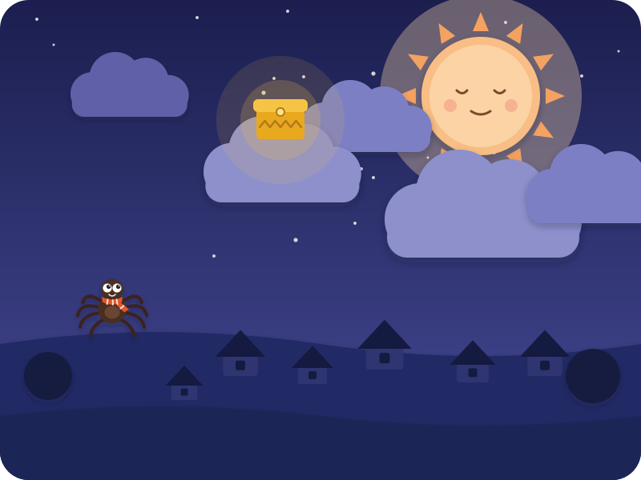
Long, long ago, there were no stories in the whole wide world. No "once upon a time". No "the end". At bedtime, children just… went to sleep.
All the stories were locked in a golden box, high up in the sky, with Nyame, the Sky God.
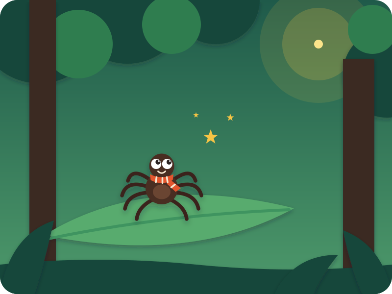
Down in the forest lived Anansi — a tiny spider with eight long legs and one very big idea.
"I'm going to get those stories," he said. "For everybody!"
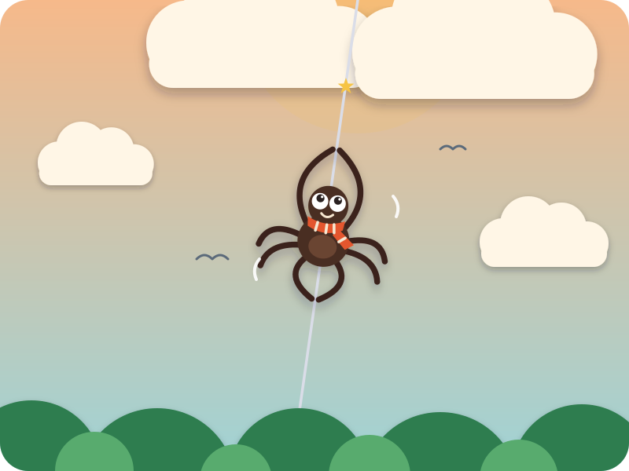
So Anansi spun a silver thread — up, up, up, all the way to the clouds.
Climb, climb, climb! Kai climbs his fingers up into the air
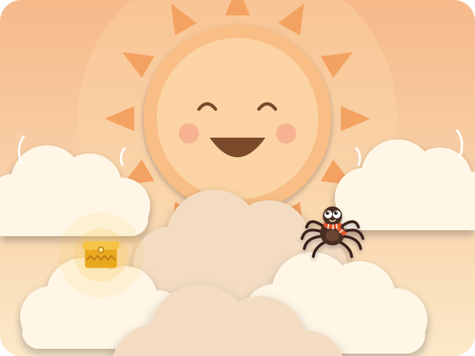
Nyame laughed a great big thunder laugh — HO HO HO!
"Kings have tried. Elephants have tried. And you are so small! But… bring me Python, the Hornets and Leopard — and the stories are yours."
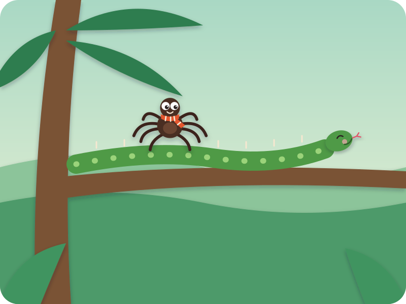
Python was very proud of being long. "I think this branch is longer than you," said Anansi.
"Nonsense!" — s-s-s-stretch! Kai stretches his arms wide
"Come to the sky — the Sky God will measure you!"
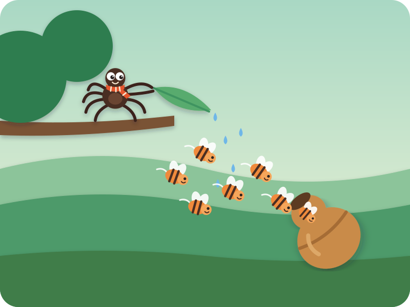
Next, the Hornets. Anansi tipped water from a leaf — drip, drip, splash!
"Rain! Rain!" he called. "Quick, hide in my gourd!"
Bzzzzzz! In they zoomed, nice and dry. Kai buzzes like a hornet
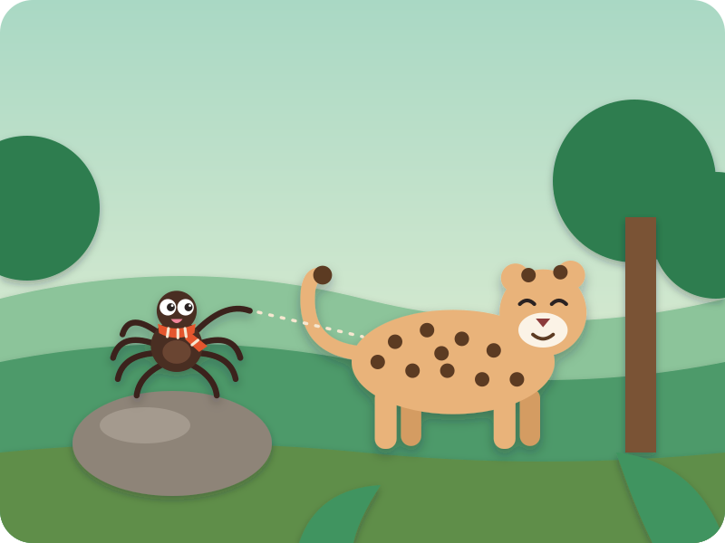
Then Leopard. "Leopard, you have so many spots that nobody can count them. Only the Sky God knows numbers that big!"
"Then let's go and ask him!" said Leopard. Shall we count some spots? 1, 2, 3, 4, 5! Kai counts
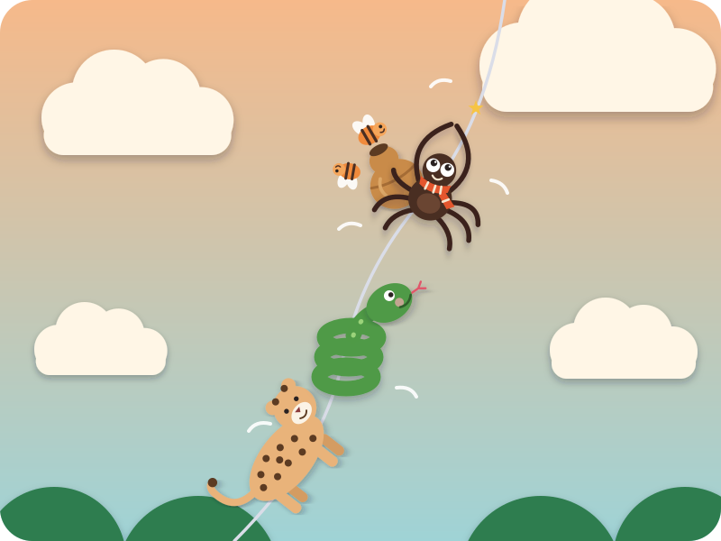
Up the silver thread they went — Python, the Hornets and Leopard, with little Anansi in front.
The thread wobbled this way… Kai leans left and wobbled that way… Kai leans right but it didn't break!
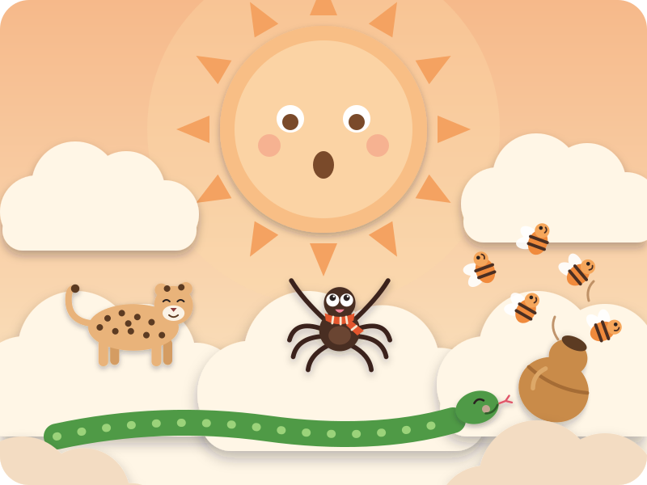
Nyame was amazed! He measured Python — the longest snake in the world! He counted Leopard's spots — one thousand and one! And out zoomed the Hornets, buzzing happily.
"Little Anansi," said Nyame, "you did what the big ones couldn't."
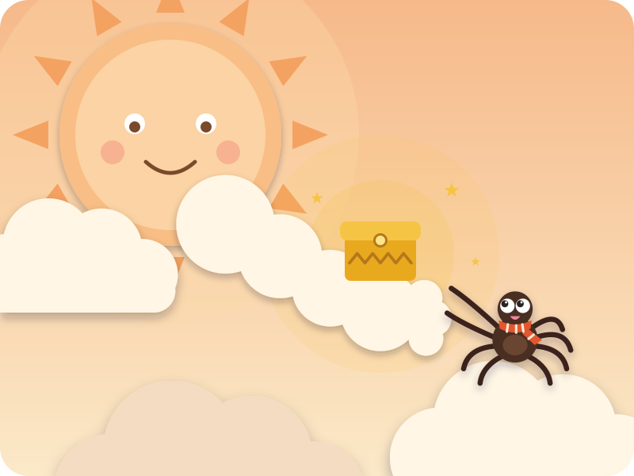
And Nyame gave Anansi the golden box.
"The stories are yours now, little spider. Share them well."
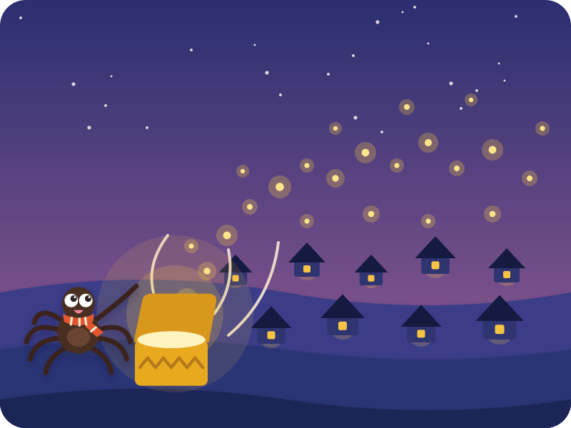
Anansi slid down his thread and opened the box — WHOOSH!
Out flew the stories, like golden fireflies — over the hills, over the seas, to every grandma and grandpa, every mummy and daddy, all around the world.
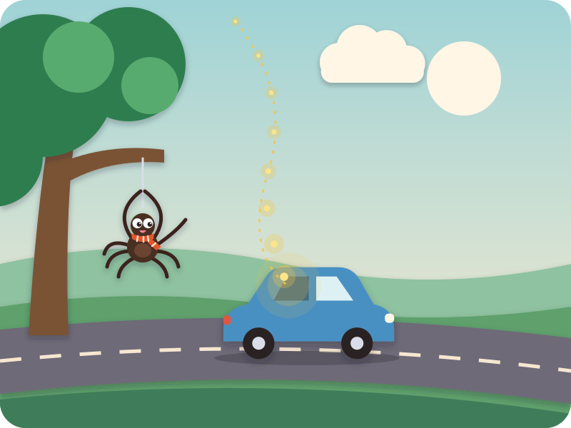
And that's why, whenever anyone tells a story, there's a little bit of Anansi's magic in it.
This one flew a long, long way… all the way to you.
The End
"Snip, snap, snout — this tale's told out."
Swipe back to read it again
Driving? Tell it without the page · six beats
The picture book is for home, bedtime, or a passenger. In the car, tell it from memory — bold is Kai's part.
- Long ago there were no stories — they were all locked in a golden box in the sky with Nyame, the Sky God.
- Tiny Anansi spins a thread to the sky — climb, climb, climb! Nyame laughs: "Bring me Python, the Hornets and Leopard."
- Proud Python wants to be measured — s-s-stretch!
- The Hornets hide from pretend rain in a gourd — bzzzz! Proud Leopard wants his spots counted — 1, 2, 3, 4, 5!
- Up the wobbly thread they all go. Nyame is amazed and gives Anansi the golden box.
- WHOOSH! The stories fly out like golden fireflies to everyone — all the way to you.
After the story · car-friendly wondering
"Anansi was the smallest — how did he do it?"
"Which was your favourite: long Python, buzzy Hornets or spotty Leopard?"
"If YOU had a box of stories, who would you give one to?"
Where this story comes from
Anansi the spider is the great storyteller-trickster of the Ashanti (Asante) people of Ghana, and his tales travelled across the Caribbean and the Americas. In Ghana, folk tales are called Anansesɛm — "spider stories" — because of this one. In the old telling Anansi must capture Onini the python, Osebo the leopard, the Mmoboro hornets and Mmoatia the fairy, using traps. This retelling is our own, for a 4-year-old: nobody is trapped — Python and Leopard come along out of pride, the Hornets hide from pretend rain, and everyone ends up happy in the sky. Nyame is the Sky God of a living Akan faith, so the pictures show him only as a great kind sun-and-cloud.